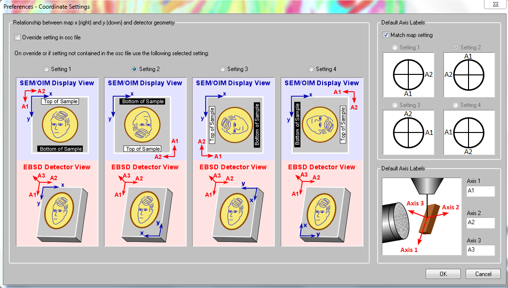

An EBSD map records where each measurement was taken and how the crystal there is oriented. Positions and orientations are meaningful together only when they are expressed in the same specimen frame.
A reference frame is the coordinate system in which data are expressed. It has an identity, a basis and a default convention for drawing it. A specimen frame describes the sample, whereas a crystal frame is fixed to a phase's lattice. Point-group symmetry is attached to a frame but is not the frame itself. See Crystal Reference Frame for that distinction.
An orientation maps a crystal frame into a specimen frame. In an EBSD file its numerical representation is usually a triplet of Euler angles. The positions are \(x\), \(y\) coordinates in the map. If those two parts use different specimen frames, every result that combines them is wrong: a grain shape against its crystal, or a pole figure against the map. The numbers themselves do not reveal the error.
MTEX therefore uses one invariant: the Euler angles refer to the map frame. The \(x\) and \(z\) axes of the map are exactly the axes about which the Bunge Euler rotations are defined. Data that arrives otherwise should be corrected during import.
Read Importing EBSD Data first if EBSD.load is new to you. This page explains the frame decision that import cannot make for you. On Screen Coordinate System Alignment treats plotting conventions in more detail.
The two specimen frames in a data file
A vendor file may use one specimen frame for map positions and another for Euler angles. The EDAX export dialog shows the mismatch plainly.

The blue axes \(x\) and \(y\) describe the map coordinates. The red axes \(A_1\), \(A_2\), \(A_3\) describe the frame used by the Euler angles and hence by every pole figure computed from them. None of the four settings makes those axes coincide. Oxford and Bruker files present the same problem with different alignments.
Establish the physical specimen frame before choosing a setting. An asymmetric mark on the sample can link its directions to the SEM image, while a crystal of known orientation checks the link from the diffraction pattern to the lattice. Repeat this calibration when the microscope, detector or acquisition convention changes. Do not choose a correction merely because its map resembles the vendor display.
EDAX numbers the alignments 1 to 4. Setting 2 is by far the most common, but an .ang file does not store the setting. MTEX therefore assumes setting 2 and reports that assumption when none is supplied. State the setting explicitly when it is known, or pass 'setting',0 when the two frames already coincide and no correction is required.
specimenFrame.specimen.makeDefault;
plottingConvention.default('y↓→x');
ebsd = EBSD.load([mtexEBSDPath filesep 'olivineopticalmap.ang'],'setting',2);
EulerCorrection = ebsd.EulerCorrectionEulerCorrection = rotation
Bunge Euler angles in degree
phi1 Phi phi2
315 180 45The displayed rotation is the import's audit record: it is the correction selected by setting 2. Keeping the object itself silent avoids printing phase and property details that do not answer the frame question.
A format without a numbered catalogue takes the correction directly. EulerCorrection is the rotation that maps the Euler-angle frame onto the map frame:
ebsd = EBSD.load(fileName,'EulerCorrection',rotation.map(xvector,xvector,zvector,-zvector))This correction changes the imported orientations so that position and orientation agree. It is not a plotting command. The small indicator in the corner of the following map is switched on by 'refFrame','on'. It states the current screen layout: \(x\) points east, \(y\) south and \(z\) into the screen.
plot(ebsd('olivine'),ebsd('olivine').orientations, ...
'ipfDirection',zvector,'refFrame','on')
Screen layout is a different question
A map need not appear on screen as it did in the commercial software. Whether the picture is upside down is a choice of display. Whether the map and orientations are aligned with the specimen is a question of correctness, and only the latter can invalidate the analysis.
A plotting convention states how a reference frame is laid out on screen. It never changes the data. Passing 'how2plot' to one plot changes that plot alone.
% draw x down and y east for this plot only
plot(ebsd('olivine'),ebsd('olivine').orientations, ...
'ipfDirection',zvector,'how2plot','x↓→y','refFrame','on')
The two screen directions are unchanged, but the axes drawn along them have swapped: \(x\) now runs down and \(y\) to the right. The picture is therefore reflected about the diagonal from top left to bottom right. The large red grain that was at the right edge is now at the bottom left, and the corner indicator has flipped from \(z\) into the screen to \(z\) out of it. Every grain kept its colour, because neither coordinates nor orientations changed.
To change the convention for a whole session, use plottingConvention.default as at the top of this page.
Imported data initially uses the generic specimen frame with axes \(X\), \(Y\), \(Z\). Once their physical meaning is known, the frame can instead be named as a rolling frame with RD, TD, ND, or as a geological frame. See Named Reference Frames for that step.
Check the alignment against the specimen
No value stored in the map can prove that its absolute frame is correct. The check must use independent knowledge of the material or specimen. The most direct test for this olivine map is to draw each large grain's crystal shape at the measured orientation and compare crystal habit with grain shape.
% reconstruct grains
grains = calcGrains(ebsd);
% use the crystal shape for olivine
cS = crystalShape.olivine;
% select large grains and show the count used below
largeGrains = grains(grains.numPixel>500);
numLargeGrains = length(largeGrains)
% draw the measured orientations and overlay the crystal shapes
plot(ebsd('olivine'),ebsd('olivine').orientations,'refFrame','on', ...
'ipfDirection',zvector,'Location','se')
hold on
plot(largeGrains,cS,'colored')
hold off
legend offnumLargeGrains =
8
Eight grains pass the size threshold. Most are nearly equant and say little, but the elongated grain at the right edge carries an elongated crystal pointing the same way. That agreement is expected for this rock. It is useful evidence only because the olivine habit is known independently; equant grains or a material without shape-preferred orientation would not provide the same check. A wrong frame would turn or mirror the crystals systematically against the grains.
A second check compares a pole figure with a known specimen direction or feature such as foliation, lineation, RD, TD or ND.
h = Miller({1,0,0},{0,1,0},{0,0,1},ebsd('O').CS);
plotPDF(ebsd('O').orientations,h,'contourf')
Pole figures describe directions in the specimen, so MTEX draws them in the same frame as the map: \(x\) east and \(y\) south here. A direction read from the map is therefore the same direction in the pole figure. The three plots contain sharp maxima rather than an even covering, so the specimen is textured. The strongest (010) maximum lies on the eastern rim, along the map's \(x\) axis.
Texture alone does not certify the frame. This maximum becomes a check only when an independent observation says that the corresponding crystal direction should align with that specimen direction.
Change the map coordinates alone
The following three operations are diagnostic demonstrations after a consistent import. They show why an incorrect result can still look ordinary. Rotating only the map coordinates flips or turns the picture while leaving the orientations unchanged. This is useful when the map was recorded mirrored with respect to the specimen.
rot = rotation.byAxisAngle(yvector,180*degree);
ebsd_rot = rotate(ebsd,rot,'keepEuler');
% reconstruct grains
grains = calcGrains(ebsd_rot);
% select only large grains
largeGrains = grains(grains.numPixel>500);
% put the reference-frame indicator where no crystal covers it
plot(ebsd_rot('olivine'),ebsd_rot('olivine').orientations, ...
'ipfDirection',zvector,'refFrame','on','Location','ne')
% overlay the crystal shapes
hold on
plot(largeGrains,cS,'colored')
legend off
hold off
The map is mirrored left to right. The large red grain has moved from the right edge to the left, while each crystal is drawn as before at the mirrored position of its grain. The two frames have been pulled apart on purpose, yet the result still looks like an ordinary map. That is what a wrongly imported data set looks like, and why the correction belongs at import.
Change the Euler angles alone
The opposite operation keeps the coordinates and turns only the orientations.
ebsd_rot = rotate(ebsd,rot,'keepXY');
% reconstruct grains
grains = calcGrains(ebsd_rot);
% select only large grains
largeGrains = grains(grains.numPixel>500);
plot(ebsd_rot('olivine'),ebsd_rot('olivine').orientations, ...
'ipfDirection',zvector,'refFrame','on','Location','se')
% overlay the crystal shapes
hold on
plot(largeGrains,cS,'colored')
legend off
hold off
The grains remain where they were, while the crystals turn. The colours do not change: the key asks which crystal direction points along \(z\), this rotation sends that direction to its opposite, and olivine has an inversion centre. Colour alone therefore cannot reveal this frame error. Only a quantity with directional shape can do so.
Rotate coordinates and orientations together
Rotating both parts keeps the data self-consistent and moves the map as a whole. This active rotation is appropriate when the specimen really is to be reoriented by a known amount, for example to correct different mounting angles before several maps are compared. Translation is handled by shift and rotation by rotate.
This is distinct from a frame change, which re-expresses the same physical object in another reference frame without moving it. Naming an already calibrated frame and actively rotating data are not substitutes for one another.
% define a five degree rotation about z
rot = rotation.byAxisAngle(zvector,5*degree);
% rotate positions and orientations together
ebsd_rot = rotate(ebsd,rot);
% reconstruct grains
grains = calcGrains(ebsd_rot);
% select only large grains
largeGrains = grains(grains.numPixel>500);
plot(ebsd_rot('olivine'),ebsd_rot('olivine').orientations, ...
'ipfDirection',zvector,'refFrame','on','Location','se')
% overlay the crystal shapes
hold on
plot(largeGrains,cS,'colored')
legend off
hold off
The whole map is tilted by five degrees and the crystals move with it, so they still fit their grains.
Further reading
- T.B. Britton et al., Tutorial: crystal orientations and EBSD - or which way is up?, Materials Characterization 117 (2016), 113-126. The paper gives practical tests for linking the specimen, map, diffraction-pattern and crystal frames.
- ISO 24173:2024, Microbeam analysis - Guidelines for orientation measurement using electron backscatter diffraction, covers instrument calibration and reproducible orientation measurement.
- The Oxford Instruments H5OINA specification defines its microscope, sample, crystal and detector frames and states which one each stored field uses.
- G. Nolze, Euler angles and crystal symmetry, Crystal Research and Technology 50 (2015), 188-201, explains why identical physical orientations can have different Euler triplets when frame and symmetry conventions differ.
Citing this page.
This page is part of the documentation of
MTEX, a free and open
source MATLAB toolbox for analyzing and modeling crystallographic textures.
It was written by The MTEX Developers and is published at
https://mtex-playground.github.io/EBSDReferenceFrame.html.
If you use MTEX, or reuse text or figures from this page, in your research,
please cite
F. Bachmann, R. Hielscher, H. Schaeben: Texture Analysis with MTEX - Free and Open Source Software Toolbox, Solid State Phenomena 160 (2010), 63-68. 10.4028/www.scientific.net/SSP.160.63
BibTeX
@article{bachmann2010mtex,
author = {F. Bachmann and R. Hielscher and H. Schaeben},
title = {Texture Analysis with MTEX - Free and Open Source Software Toolbox},
journal = {Solid State Phenomena},
volume = {160},
pages = {63-68},
year = {2010},
doi = {10.4028/www.scientific.net/SSP.160.63},
url = {https://doi.org/10.4028/www.scientific.net/SSP.160.63}
}Other papers describing specific MTEX methods are listed under Publications — please cite the one that best fits your application. The MTEX source code is licensed under the GNU General Public License v2.0; the text and figures of this documentation are licensed under CC BY 4.0, which permits reuse — including by automated systems — provided The MTEX Developers and this page are credited.